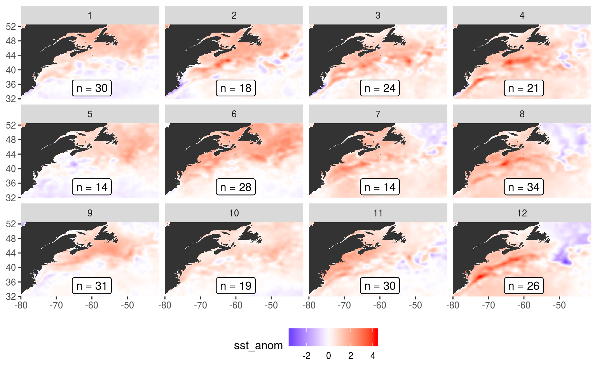

Last updated: 2019-06-10
workflowr checks: (Click a bullet for more information) ✔ R Markdown file: up-to-date
Great! Since the R Markdown file has been committed to the Git repository, you know the exact version of the code that produced these results.
✔ Environment: empty
Great job! The global environment was empty. Objects defined in the global environment can affect the analysis in your R Markdown file in unknown ways. For reproduciblity it’s best to always run the code in an empty environment.
✔ Seed:
set.seed(20190513)
The command set.seed(20190513) was run prior to running the code in the R Markdown file. Setting a seed ensures that any results that rely on randomness, e.g. subsampling or permutations, are reproducible.
✔ Session information: recorded
Great job! Recording the operating system, R version, and package versions is critical for reproducibility.
✔ Repository version: c6b3c7b
wflow_publish or wflow_git_commit). workflowr only checks the R Markdown file, but you know if there are other scripts or data files that it depends on. Below is the status of the Git repository when the results were generated:
Ignored files:
Ignored: .Rhistory
Ignored: .Rproj.user/
Ignored: data/NAPA_clim_U.Rda
Ignored: data/NAPA_clim_V.Rda
Ignored: data/NAPA_clim_W.Rda
Ignored: data/NAPA_clim_emp_ice.Rda
Ignored: data/NAPA_clim_emp_oce.Rda
Ignored: data/NAPA_clim_fmmflx.Rda
Ignored: data/NAPA_clim_mldkz5.Rda
Ignored: data/NAPA_clim_mldr10_1.Rda
Ignored: data/NAPA_clim_qemp_oce.Rda
Ignored: data/NAPA_clim_qla_oce.Rda
Ignored: data/NAPA_clim_qns.Rda
Ignored: data/NAPA_clim_qsb_oce.Rda
Ignored: data/NAPA_clim_qt.Rda
Ignored: data/NAPA_clim_runoffs.Rda
Ignored: data/NAPA_clim_ssh.Rda
Ignored: data/NAPA_clim_sss.Rda
Ignored: data/NAPA_clim_sst.Rda
Ignored: data/NAPA_clim_taum.Rda
Ignored: data/NAPA_clim_vars.Rda
Ignored: data/NAPA_clim_vecs.Rda
Ignored: data/node_mean_all_anom.Rda
Ignored: data/packet_all_anom.Rda
Ignored: data/som_all_anom.Rda
Ignored: data/synoptic_states.Rda
Ignored: data/synoptic_vec_states.Rda
Untracked files:
Untracked: output/som_plot_uoce_anom.pdf
Untracked: output/som_plot_voce_anom.pdf
Unstaged changes:
Modified: analysis/MHWNWA.bib
Modified: code/workflow.R
Modified: output/som_plot_mldr10_1_anom.pdf
Modified: output/som_plot_qt_anom.pdf
Modified: output/som_plot_sst_anom.pdf
Modified: output/som_plot_taum_anom.pdf
| File | Version | Author | Date | Message |
|---|---|---|---|---|
| Rmd | c6b3c7b | robwschlegel | 2019-06-10 | Re-publish entire site. |
| Rmd | 1b53eeb | robwschlegel | 2019-06-10 | SOM packet pipeline testing |
| Rmd | 4504e12 | robwschlegel | 2019-06-07 | Working on joining in vector data |
| html | c61a15f | robwschlegel | 2019-06-06 | Build site. |
| Rmd | 44ac335 | robwschlegel | 2019-06-06 | Working on inclusion of vectors into SOM pipeline |
| html | 6dd6da8 | robwschlegel | 2019-06-06 | Build site. |
| Rmd | 07137d9 | robwschlegel | 2019-06-06 | Site wide update, including newly functioning SOM pipeline. |
| Rmd | 990693a | robwschlegel | 2019-06-05 | First SOM result visuals |
| Rmd | 25e7e9a | robwschlegel | 2019-06-05 | SOM pipeline nearly finished |
| Rmd | 4838cc8 | robwschlegel | 2019-06-04 | Working on SOM functions |
| Rmd | 94ce8f6 | robwschlegel | 2019-06-04 | Functions for creating data packets are up and running |
| Rmd | 65301ed | robwschlegel | 2019-05-30 | Push before getting rid of some testing structure |
| html | c09b4f7 | robwschlegel | 2019-05-24 | Build site. |
| Rmd | 5dc8bd9 | robwschlegel | 2019-05-24 | Finished initial creation of SST prep vignette. |
| html | a29be6b | robwschlegel | 2019-05-13 | Build site. |
| html | ea61999 | robwschlegel | 2019-05-13 | Build site. |
| Rmd | f8f28b1 | robwschlegel | 2019-05-13 | Skeleton files |
This markdown file will contain the code used to perform the self-organising map (SOM) analysis on the prepared variable data as seen in the Variable preparation vignette and on the prepared vectors seen in the Vector preparation vignette.
# Insatll from GitHub
# .libPaths(c("~/R-packages", .libPaths()))
# devtools::install_github("fabrice-rossi/yasomi")
# Packages used in this vignette
library(jsonlite, lib.loc = "../R-packages/")
library(tidyverse) # Base suite of functions
library(ncdf4) # For opening and working with NetCDF files
library(lubridate) # For convenient date manipulation
# library(scales) # For scaling data before running SOM
library(yasomi, lib.loc = "../R-packages/") # The SOM package of choice due to PCI compliance
library(data.table) # For working with massive dataframes
# Set number of cores
doMC::registerDoMC(cores = 50)
# Disable scientific notation for numeric values
# I just find it annoying
options(scipen = 999)
# Set number of cores
doMC::registerDoMC(cores = 50)
# Disable scientific notation for numeric values
# I just find it annoying
options(scipen = 999)
# Individual regions
NWA_coords <- readRDS("data/NWA_coords_cabot.Rda")
# The NAPA variables
NAPA_vars <- readRDS("data/NAPA_vars.Rda")
# Corners of the study area
NWA_corners <- readRDS("data/NWA_corners.Rda")
# Create smaller corners to use less RAM
# This also better matches the previous South African work
# The Tasmania work had corners of roughly 2 degrees greater than the study area
NWA_corners_sub <- c(NWA_corners[1]+8, NWA_corners[2]-8, NWA_corners[3]+8, NWA_corners[4]-8)
# The base map
map_base <- ggplot2::fortify(maps::map(fill = TRUE, col = "grey80", plot = FALSE)) %>%
dplyr::rename(lon = long) %>%
mutate(group = ifelse(lon > 180, group+9999, group),
lon = ifelse(lon > 180, lon-360, lon)) %>%
select(-region, -subregion)“Finally, Shearman and Lentz (2010) showed that century-long ocean warming trends observed along the entire northeast U.S. coast are not related to local atmospheric forcing but driven by atmospheric warming of source waters in the Labrador Sea and the Arctic, which are advected into the region.” (Richaud et al., 2016)
Downelling
Net heatflux (OAFlux) doesn’t line up perfectly with seasonal SST signal, but is very close, with heat flux tending to lead SST by 2 – 3 months.s (Richaud et al., 2016). It is therefore likely one of the primary drivers of SST and should therefore be strongly considered when constructing SOMs.
There is almost no seasonal cycle for slope waters in any of the regions (Richaud et al., 2016).
It would be interesting to see if the SOM outputs differ in any meaningful wayss when only data from the first half of the study time period are used compared against the second half.
In this last step before running our SOM analyses we want to create data packets that can be fed directly into the SOM algorithm. At the moment we will just create a packet for a few choice anomaly variables. This is because using all of the variables at once has proven to be too large a task. This is because we must create very wide dataframes (~80,000 columns) and R struggles with this.
# Load the synoptic states data packet
synoptic_states <- readRDS("data/synoptic_states.Rda")
# Load the synoptic vector states data packet
synoptic_vec_states <- readRDS("data/synoptic_vec_states.Rda")
# Unnest the synoptic data
synoptic_states_unnest <- synoptic_states %>%
select(region, sub_region, event_no, synoptic) %>%
unnest()
# NB: The range of values for mixed layer depth anomalies is muuuuch greater
# in the Labrador sea than elsewhere in the study area.
# So we scale it here first before feeding it into the SOM to be scaled again
synoptic_states_anom_fix <- synoptic_states_unnest %>%
select(region:lat, sst_anom, taum_anom, qt_anm, mldr10_1_anom) %>%
# slice(1:100000) %>%
group_by(lon, lat) %>%
mutate(mldr10_1_anom = mldr10_1_anom/max(abs(mldr10_1_anom), na.rm = T)) %>%
# na.omit() %>%
ungroup()
# Unnest the synoptic vector data
synoptic_vec_states_unnest <- synoptic_vec_states %>%
select(region, sub_region, event_no, synoptic) %>%
unnest()
# NB: There is an issue downstream with one or more of the vector pixels always having a value of 0
# This needs to be accounted for here before joining the data further
synoptic_vec_states_anom_fix <- synoptic_vec_states_unnest %>%
select(region:lat, uoce_anom:voce_anom) %>%
group_by(lon, lat) %>%
mutate(uoce_anom = case_when(min(uoce_anom, na.rm = T) != 0 & max(uoce_anom, na.rm = T) != 0 ~ uoce_anom),
voce_anom = case_when(min(voce_anom, na.rm = T) != 0 & max(voce_anom, na.rm = T) != 0 ~ voce_anom)) %>%
# na.omit() %>%
ungroup()
# Set number of cores
# NB: 50 uses too much RAM
doMC::registerDoMC(cores = 25)
# Packet for all synoptic anomaly data for all regions etc.
system.time(
packet_all_anom <- left_join(synoptic_states_anom_fix,
synoptic_vec_states_anom_fix,
by = c("region", "sub_region", "event_no", "lon", "lat")) %>%
# The variable dataframe is longer than the vector dataframe
# na.omit() %>%
# NB: A shortened list of variables to be more manageable
# select(region:lat, sst_anom, taum_anom, qt_anm,
# mldr10_1_anom, uoce_anom, voce_anom) %>%
# NB: The full list if one desires
# select(region:lat, emp_oce_anom:taum_anom) %>%
data.table::data.table() %>%
filter(lon >= NWA_corners_sub[1], lon <= NWA_corners_sub[2],
lat >= NWA_corners_sub[3], lat <= NWA_corners_sub[4]) %>%
reshape2::melt(id = c("region", "sub_region", "event_no", "lon", "lat"),
measure = c(colnames(.)[-c(1:5)]),
variable.name = "var", value.name = "val") %>%
dplyr::arrange(var, lon, lat) %>%
# reshape2::dcast(formula = region + sub_region, event_no ~ lon + lat + var, value.var = "val")
unite(coords, c(lon, lat, var), sep = "BBB") %>%
unite(event_ID, c(region, sub_region, event_no), sep = "BBB") %>%
reshape2::dcast(event_ID ~ coords, value.var = "val")
# mutate(region_ply = region,
# sub_region_ply = sub_region) %>%
# plyr::ddply(c("region_ply", "sub_region_ply"), wide_matrix, .parallel = T) %>%
# select(-region_ply, -sub_region_ply)
) # 367 seconds
# Remove columns (pixels) with missing data
packet_all_anom_fix <- packet_all_anom[,colSums(is.na(packet_all_anom))<1]
saveRDS(packet_all_anom_fix, "data/packet_all_anom.Rda")Now that we have our anomaly data packet to feed the SOM, we need a function that will ingest them and produce results for us.
# Function for calculating SOMs using PCI
# NB: 4x4 produced one empty cell and one cell with only one event
# So the default size has been reduced to 4x3
som_model_PCI <- function(data_packet, xdim = 4, ydim = 3){
# Create a scaled matrix for the SOM
# Cancel out first column as this is the reference ID of the event per row
data_packet_matrix <- as.matrix(scale(data_packet[,-1]))
# Create the grid that the SOM will use to determine the number of nodes
som_grid <- somgrid(xdim = xdim, ydim = ydim, topo = "hexagonal")
# Run the SOM with PCI
som_model <- batchsom(data_packet_matrix,
somgrid = som_grid,
init = "pca",
max.iter = 100)
return(som_model)
}With the function sorted, we now feed the data.
all_anom <- readRDS("data/packet_all_anom.Rda")
system.time(som_all_anom <- som_model_PCI(all_anom)) # 225 seconds
saveRDS(som_all_anom, file = "data/som_all_anom.Rda")We will create two functions below that will be useful for unpacking the SOM results.
# Function for determining node indexes
# testers...
# data_packet <- all_anom; som_output <- som_all_anom
event_node_index <- function(data_packet, som_output){
# Count the number of events per node
node_count <- as.data.frame(table(som_output$classif)) %>%
dplyr::rename(node = Var1,
count = Freq) %>%
mutate(node = as.numeric(as.character(node)))
# Create a more complete data.frame of info
event_node <- data.frame(event_ID = data_packet[,"event_ID"],
node = som_output$classif) %>%
separate(event_ID, into = c("region", "sub_region", "event_no"), sep = "BBB") %>%
left_join(node_count, by = "node")
# NB: This is potentially where the season of the event would be inserted
return(event_node)
}
# Functions for unpacking som results
# Create mean results from initial data frame based on node clustering
# testers...
# data_packet <- all_anom; som_output <- som_all_anom
som_unpack_mean <- function(data_packet, som_output){
# Determine which event goes in which node and melt
data_packet_long <- data.frame(event_ID = data_packet[,"event_ID"],
node = som_output$classif) %>%
separate(event_ID, into = c("region", "sub_region", "event_no"), sep = "BBB") %>%
cbind(data_packet[,-1]) %>%
data.table() %>%
reshape2::melt(id = c("region", "sub_region", "event_no", "node"),
measure = c(colnames(.)[-c(1:4)]),
variable.name = "variable", value.name = "value")
# Create the mean values that serve as the unscaled results from the SOM
var_unscaled <- data_packet_long[, .(val = mean(value, na.rm = TRUE)),
by = .(node, variable)] %>%
separate(variable, into = c("lon", "lat", "var"), sep = "BBB") %>%
dplyr::arrange(node, var, lon, lat) %>%
mutate(lon = as.numeric(lon),
lat = as.numeric(lat))
return(var_unscaled)
}And now we unpack the SOM results.
# Load data packet
all_anom <- readRDS("data/packet_all_anom.Rda")
# Load SOM packet for anomaly data
som_all_anom <- readRDS("data/som_all_anom.Rda")
# Determine node index
node_index_all_anom <- event_node_index(all_anom, som_all_anom)
# Create and save mean synoptic states per node
node_mean_all_anom <- som_unpack_mean(all_anom, som_all_anom)
# saveRDS(node_mean_all_anom, "data/node_mean_all_anom.Rda")First up the functions for visualising the unpacked results.
# Ease of life function
som_node_visualise <- function(sub_var = "sst_anom", viridis_option = "D"){
# Subset data
node_mean_all_anom_sub <- node_mean_all_anom %>%
filter(var == sub_var) %>%
mutate(lon = plyr::round_any(lon, 0.25),
lat = plyr::round_any(lat, 0.25)) %>%
group_by(node, lon, lat, var) %>%
summarise(val = mean(val, na.rm = T))
# Create plot
som_panel_plot <- ggplot(node_mean_all_anom_sub, aes(x = lon, y = lat)) +
# geom_point(aes(colour = val)) +
geom_raster(aes(fill = val)) +
geom_polygon(data = map_base, aes(group = group), show.legend = F) +
geom_label(data = node_index_all_anom, aes(x = -60, y = 35, label = paste0("n = ",count))) +
# geom_polygon(data = NWA_coords, aes(group = region, fill = region, colour = region), alpha = 0.1) +
coord_cartesian(xlim = NWA_corners_sub[1:2],
ylim = NWA_corners_sub[3:4],
expand = F) +
scale_fill_gradient2(low = "blue", high = "red") +
# scale_colour_viridis_c(option = viridis_option) +
labs(x = NULL, y = NULL, fill = sub_var) +
facet_wrap(~node, ncol = 4) +
theme(legend.position = "bottom")
return(som_panel_plot)
}And now we create a PDF for each of the 12 nodes for each variable individually.
# SST
plot_sst_anom <- som_node_visualise("sst_anom")
# plot_sst_anom
ggsave(plot_sst_anom, filename = "output/som_plot_sst_anom.pdf", height = 12, width = 13)
# Net downward heat flux (qt)
plot_qt_anom <- som_node_visualise("qt_anm")
# plot_qt_anom
ggsave(plot_qt_anom, filename = "output/som_plot_qt_anom.pdf", height = 12, width = 13)
# Mixed Layer Depth (mldr10_1)
plot_mldr10_1_anom <- som_node_visualise("mldr10_1_anom")
# plot_mldr10_1_anom
ggsave(plot_mldr10_1_anom, filename = "output/som_plot_mldr10_1_anom.pdf", height = 12, width = 13)
# Wind stress (taum)
plot_taum_anom <- som_node_visualise("taum_anom")
# plot_taum_anom
ggsave(plot_taum_anom, filename = "output/som_plot_taum_anom.pdf", height = 12, width = 13)
# Ocean current; U (uoce)
plot_uoce_anom <- som_node_visualise("uoce_anom")
# plot_uoce_anom
ggsave(plot_uoce_anom, filename = "output/som_plot_uoce_anom.pdf", height = 12, width = 13)
# Ocean current; U (uoce)
plot_voce_anom <- som_node_visualise("voce_anom")
# plot_voce_anom
ggsave(plot_voce_anom, filename = "output/som_plot_voce_anom.pdf", height = 12, width = 13)See the files in the output/ folder in the GitHub repo for this project. They aren’t all shown here because they take a bit too long to render. But the following shows what the SST anomaly nodes look like.
plot_sst_anom <- som_node_visualise("sst_anom")
plot_sst_anom
Up next in the Figures vignette we will show the results in more depth.
Richaud, B., Kwon, Y.-O., Joyce, T. M., Fratantoni, P. S., and Lentz, S. J. (2016). Surface and bottom temperature and salinity climatology along the continental shelf off the canadian and us east coasts. Continental Shelf Research 124, 165–181.
sessionInfo()R version 3.6.0 (2019-04-26)
Platform: x86_64-pc-linux-gnu (64-bit)
Running under: Ubuntu 16.04.5 LTS
Matrix products: default
BLAS: /usr/lib/openblas-base/libblas.so.3
LAPACK: /usr/lib/libopenblasp-r0.2.18.so
locale:
[1] LC_CTYPE=en_CA.UTF-8 LC_NUMERIC=C
[3] LC_TIME=en_CA.UTF-8 LC_COLLATE=en_CA.UTF-8
[5] LC_MONETARY=en_CA.UTF-8 LC_MESSAGES=en_CA.UTF-8
[7] LC_PAPER=en_CA.UTF-8 LC_NAME=C
[9] LC_ADDRESS=C LC_TELEPHONE=C
[11] LC_MEASUREMENT=en_CA.UTF-8 LC_IDENTIFICATION=C
attached base packages:
[1] stats graphics grDevices utils datasets methods base
other attached packages:
[1] bindrcpp_0.2.2 data.table_1.11.6 yasomi_0.3
[4] proxy_0.4-22 e1071_1.7-0 lubridate_1.7.4
[7] ncdf4_1.16 forcats_0.3.0 stringr_1.3.1
[10] dplyr_0.7.6 purrr_0.2.5 readr_1.1.1
[13] tidyr_0.8.1 tibble_1.4.2 ggplot2_3.0.0
[16] tidyverse_1.2.1 jsonlite_1.6
loaded via a namespace (and not attached):
[1] tidyselect_0.2.4 reshape2_1.4.3 haven_1.1.2
[4] lattice_0.20-35 colorspace_1.3-2 htmltools_0.3.6
[7] yaml_2.2.0 rlang_0.2.2 R.oo_1.22.0
[10] pillar_1.3.0 glue_1.3.0 withr_2.1.2
[13] R.utils_2.7.0 doMC_1.3.5 modelr_0.1.2
[16] readxl_1.1.0 foreach_1.4.4 bindr_0.1.1
[19] plyr_1.8.4 munsell_0.5.0 gtable_0.2.0
[22] workflowr_1.1.1 cellranger_1.1.0 rvest_0.3.2
[25] R.methodsS3_1.7.1 codetools_0.2-15 evaluate_0.11
[28] labeling_0.3 knitr_1.20 parallel_3.6.0
[31] class_7.3-14 broom_0.5.0 Rcpp_0.12.18
[34] backports_1.1.2 scales_1.0.0 hms_0.4.2
[37] digest_0.6.16 stringi_1.2.4 grid_3.6.0
[40] rprojroot_1.3-2 cli_1.0.0 tools_3.6.0
[43] maps_3.3.0 magrittr_1.5 lazyeval_0.2.1
[46] crayon_1.3.4 whisker_0.3-2 pkgconfig_2.0.2
[49] xml2_1.2.0 iterators_1.0.10 assertthat_0.2.0
[52] rmarkdown_1.10 httr_1.3.1 rstudioapi_0.7
[55] R6_2.2.2 nlme_3.1-137 git2r_0.23.0
[58] compiler_3.6.0 This reproducible R Markdown analysis was created with workflowr 1.1.1